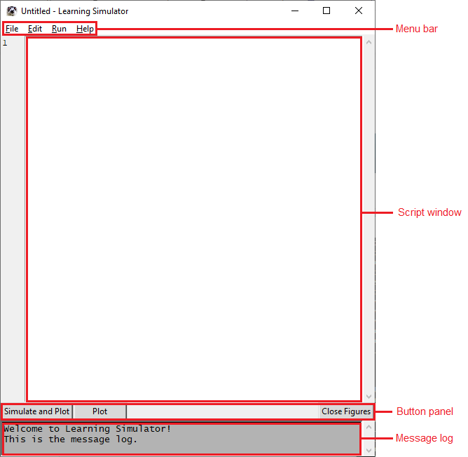

The Graphical User Interface (GUI)¶
This page describes the different parts of the graphical user interface in Learning Simulator.
See How to Run Learning Simulator for instructions on how to launch the GUI.
The GUI aims to allow easy editing and running of a simulation script.
Script window¶
This is the text area where to open/edit scripts. It works like a simple editor.
If you need further editor features, you may use your favourite editor, save the file as a text-file, and run the script from the command line. See How to Run Learning Simulator.
Button panel¶
The Simulate and Plot button does the same as the menu item Run > Simulate and Plot
The Plot button does the same as the menu item Run > Plot
The Close Figures button closes all currently open plot figures.
Message log¶
This is the message log, used to display information from the Learning Simulator.